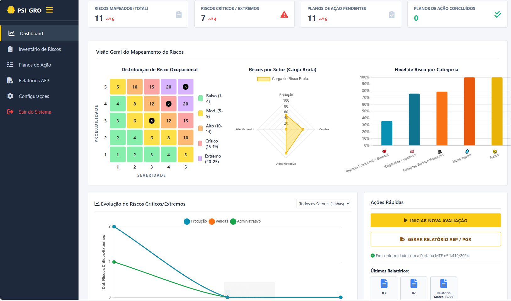

A ferramenta que transforma a percepção dos trabalhadores em dados concretos. Avaliação COPSOQ, Inventário de Riscos e Plano de Ação gerados com agilidade e precisão.

Nossa plataforma realiza a aplicação do protocolo COPSOQ de forma totalmente digital. O sistema coleta os dados de maneira estruturada, adaptando-se perfeitamente à escala e à rotina operacional da sua organização.
O algoritmo processa as respostas anônimas cruzando dados de severidade e probabilidade. Ele quantifica as percepções subjetivas, transformando o sentimento dos colaboradores em métricas exatas para a sua matriz de risco.
Tenha uma visão panorâmica e clara dos riscos departamentalizados na plataforma. O sistema compila os dados e gera gráficos comparativos entre os setores, indicando exatamente onde a intervenção deve ser priorizada.
O sistema gera propostas de intervenção estruturadas (formato 5W2H) baseadas nos dados coletados. Um direcionamento focado em resolver a raiz dos problemas identificados no mapeamento organizacional.
Vá além do diagnóstico pontual. A plataforma permite o acompanhamento contínuo da evolução dos indicadores de saúde mental e o monitoramento da eficácia das ações implementadas ao longo do tempo.
O sistema compila todo o tratamento de dados e gera a documentação completa do PGR em PDF. Relatórios técnicos padronizados, resguardando a sua empresa e prontos para apresentação imediata em auditorias do MTE.
O PSI-GRO foi desenhado para facilitar a vida do Profissional de SST e do RH. Esqueça planilhas complexas. O nosso motor cruza as respostas dos trabalhadores e constrói o seu documento base automaticamente.
Gere um QR Code ou Link. Os funcionários respondem ao questionário COPSOQ pelo celular em 3 minutos, garantindo sigilo total.
O sistema processa as respostas e popula o Inventário (GRO) indicando Perigo, Fator, Lesões e Nível de Risco pela Matriz 5x5.
Gere o PDF do PGR estruturado em segundos, incluindo cronogramas preventivos (5W2H) focados nos setores críticos.
Interface real de coleta vista pelo colaborador.
O Copenhagen Psychosocial Questionnaire (COPSOQ) é um protocolo internacionalmente validado e recomendado para o mapeamento rigoroso de riscos psicossociais no ambiente de trabalho. A nossa plataforma traduz essas avaliações complexas em dados quantitativos precisos, garantindo segurança jurídica e eficácia real no direcionamento das suas intervenções organizacionais.
Este é o modelo exato do documento PGR que o sistema emite. Formatado, com gráficos reais da matriz de risco e pronto para impressão ou PDF.
Adquira a licença completa do sistema sem mensalidades abusivas.
Pagamento Único. Sem Mensalidades.